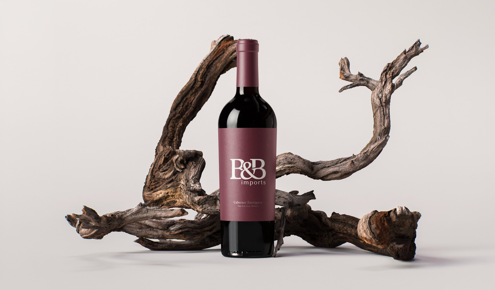
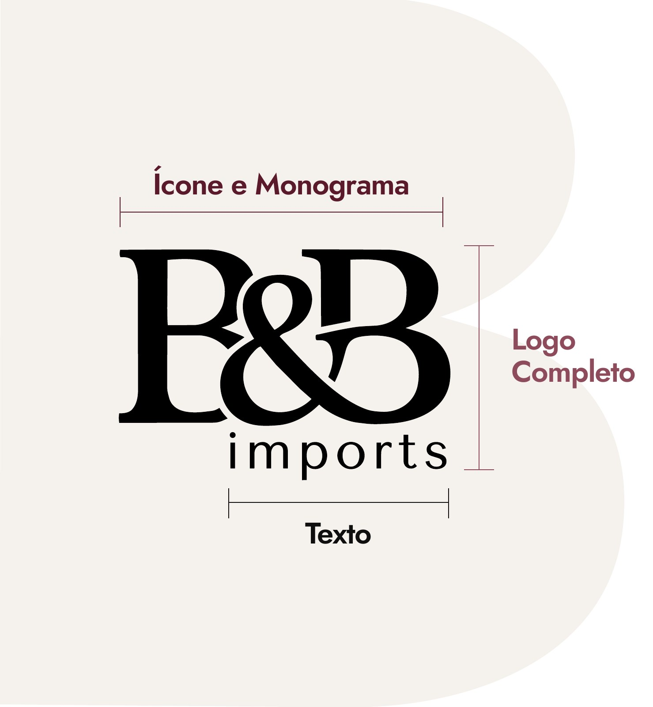
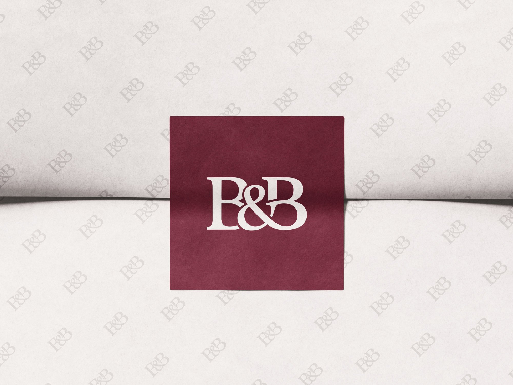
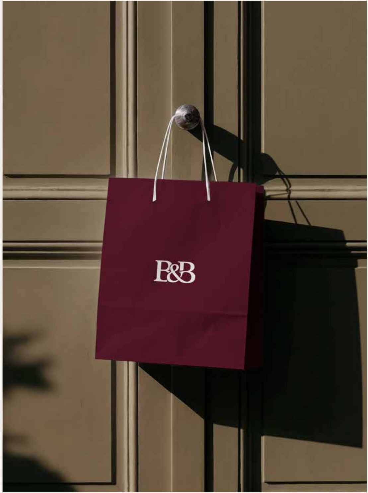
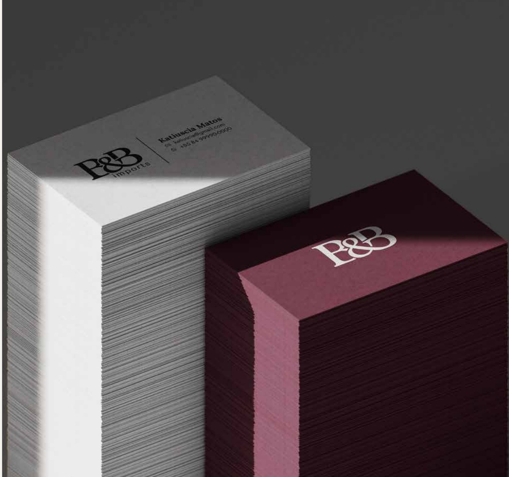

Identidade visual para uma marca de curadoria de moda e acessórios de luxo, nascida de uma parceria entre duas pessoas com o mesmo olhar para o estilo.Visual identity for a curated luxury fashion and accessories brand, born from a partnership between two people with the same eye for style.

CONCEITOCONCEPT
Duas iniciais unidas pelo “&”: a parceria que deu origem à marca virou a própria assinatura.Two initials joined by the “&”: the partnership behind the brand became its very signature.
A B&B se apresenta como a ponte para moda e acessórios de luxo, com curadoria feita com critério, cuidado e bom gosto. A identidade traduz isso em uma serifa clássica, um monograma compacto e uma paleta de tons de vinho, tinta e papel.B&B presents itself as a bridge to luxury fashion and accessories, curated with discernment, care and good taste. The identity translates this into a classic serif, a compact monogram and a palette of wine, ink and paper tones.

A assinatura da marca, formada pelas iniciais unidas pelo “&”. Compacto e reconhecível, vai em papelaria, perfis, selos, lacres e etiquetas.The brand's signature, formed by the initials joined by the “&”. Compact and recognizable, it goes on stationery, profiles, stamps, seals and tags.
Monograma e “imports” juntos: a versão institucional para site, embalagens, documentos e apresentações.Monogram and “imports” together: the institutional version for the website, packaging, documents and presentations.
“imports” indica a atividade da marca e nunca aparece sozinho, sempre ao lado do monograma.“imports” describes what the brand does and never appears on its own, always next to the monogram.
Bordô ProfundoDeep Burgundy
#5B1A2B · RGB 91 26 43
Preto TintaInk Black
#0F0F0F · RGB 15 15 15
Off-white
#F5F1EC · RGB 245 241 236
AreiaSand
#D9CFC4 · RGB 217 207 196
Bordô SuaveSoft Burgundy
#8E4B5B · RGB 142 75 91
Papelaria, embalagem e cartões, com o monograma como selo e o padrão B&B como textura.Stationery, packaging and cards, with the monogram as a seal and the B&B pattern as texture.


